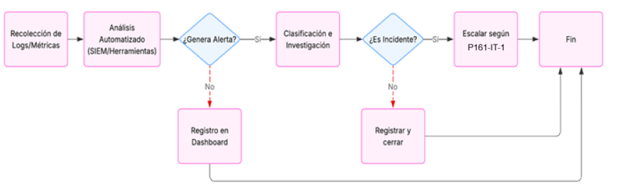
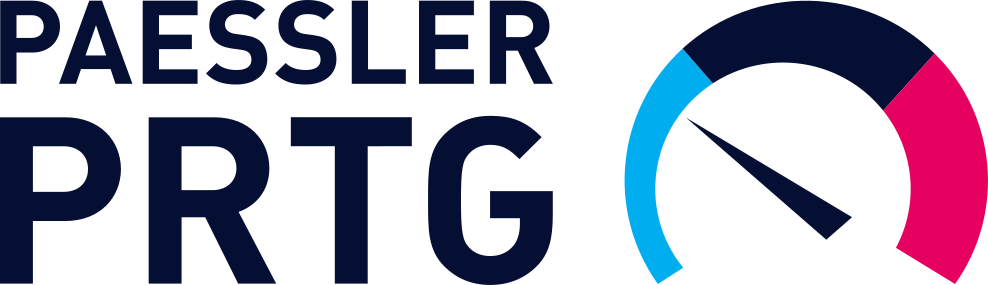
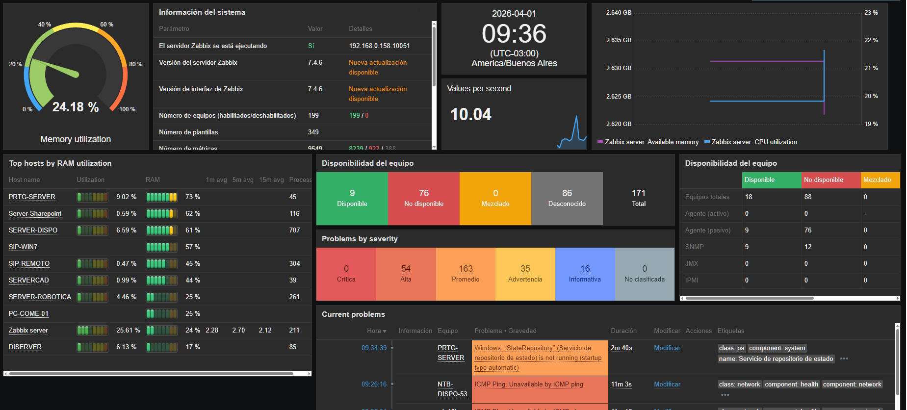
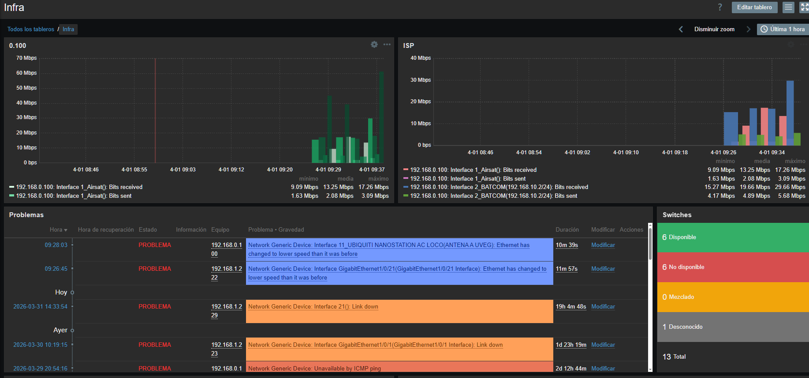
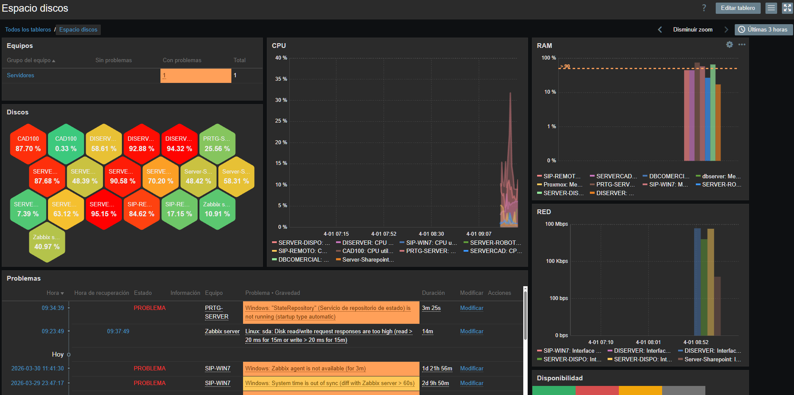
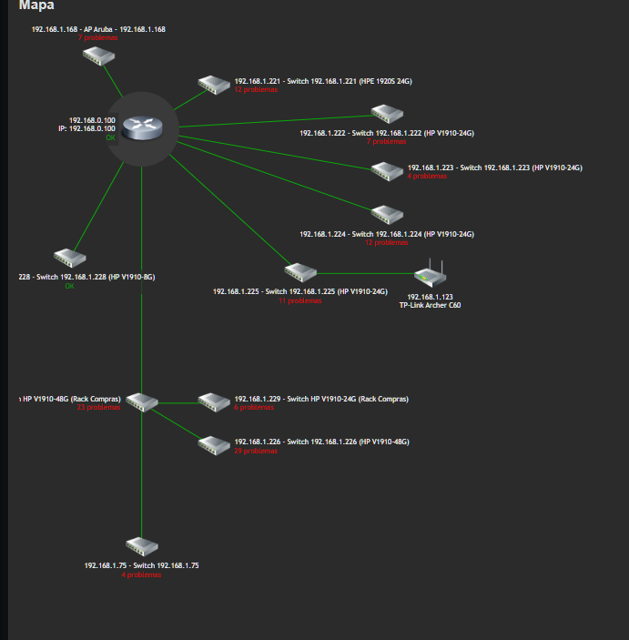
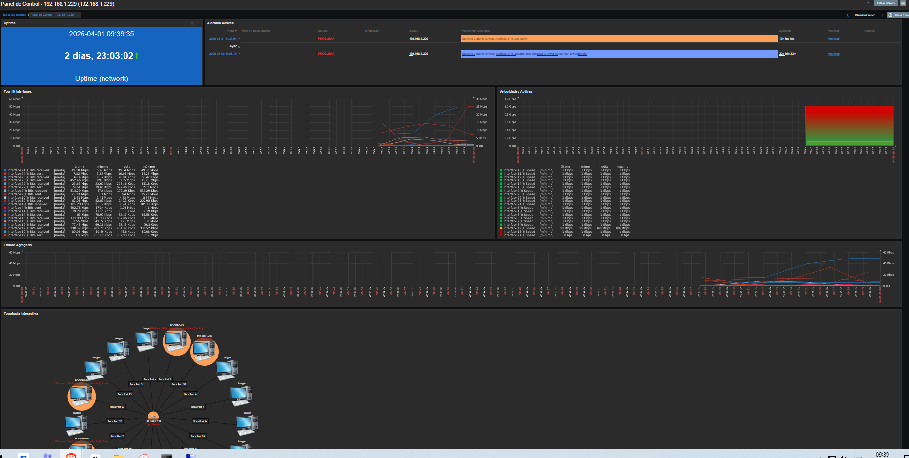
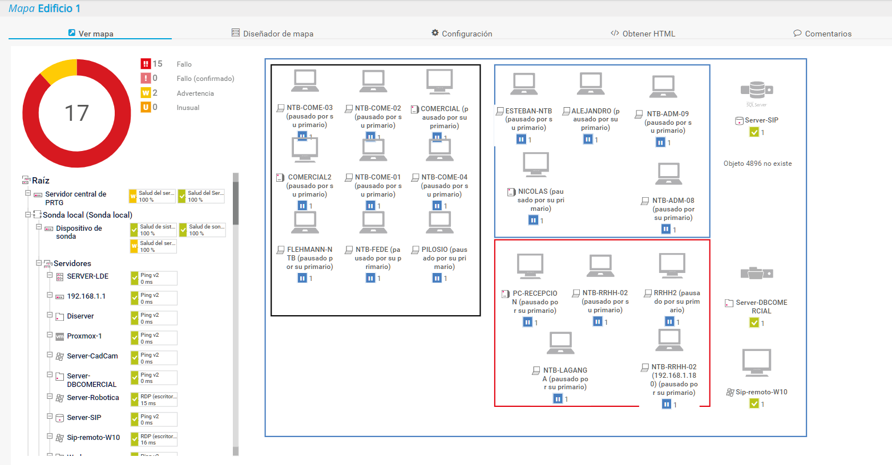
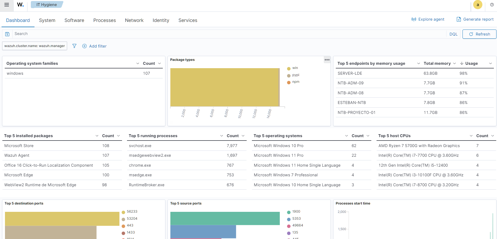

Procedimiento de Monitorización de Red
1 OBJETIVO
Establecer las actividades sistemáticas para la monitorización continua de la infraestructura de red de PRODISMO SRL, con el fin de detectar de manera proactiva incidentes de seguridad, anomalías en el tráfico y problemas de rendimiento, garantizando la disponibilidad, integridad y confidencialidad de las comunicaciones, en cumplimiento de ISO/IEC 27001:2022 y el marco TISAX.
2 ALCANCE
Este procedimiento aplica a:
- Todos los dispositivos de red (firewalls, switches, routers, puntos de acceso wireless).
- Todos los servidores y sistemas finales con conectividad de red.
- Todos los enlaces de red (LAN, WLAN, WAN).
- Personal del Departamento de IT.
3 DEFINICIONES
| Término | Definición |
|---|---|
| Monitorización | Proceso continuo de recolección y análisis de datos de la red para evaluar su estado y comportamiento. |
| SIEM (Security Information and Event Management) | Sistema centralizado que agrega y correlaciona logs para el análisis de seguridad. |
| Anomalía | Desviación del patrón normal de tráfico o comportamiento de la red que puede indicar una incidencia. |
| Log | Registro cronológico de eventos ocurridos en un sistema o dispositivo de red. |
| Threshold (Umbral) | Valor límite que, al ser superado, activa una alerta. |
4 ACTIVIDADES DE MONITORIZACIÓN
4.1. Monitorización Continua y Automatizada
1. Disponibilidad y Rendimiento:
- Monitorizar el estado de enlaces WAN críticos y dispositivos de red principales (uptime/downtime).
- Monitorizar la utilización de ancho de banda para identificar cuellos de botella o tráfico inusual.
- Verificar la latencia de la red en enlaces críticos.
2. Seguridad:
- Las herramientas SIEM/IDS/IPS deben correlacionar logs de firewalls, sistemas finales y servidores.
- Configurar reglas de detección para actividades sospechosas (ej.: escaneo de puertos, tráfico desde IP's maliciosas conocidas, intentos de acceso fallidos masivos).
- Monitorizar intentos de conexión fallidos.
4.2. Actividades Periódicas (Manuales)
1. Revisión Diaria:
- Verificar el estado de la red y enlaces críticos.
- Revisar dashboards de las herramientas de monitorización en busca de alertas críticas.
- Revisar resúmenes de logs de firewall y sistemas de detección de intrusos.
2. Revisión Semanal:
- Análisis de reportes de tendencias de tráfico y rendimiento.
- Revisión de logs de administración y acceso a dispositivos de red.
3. Revisión Mensual:
- Análisis de métricas de cumplimiento de SLA de red.
- Revisión de la efectividad de las reglas de correlación y detección del SIEM/IDS.
5 GESTIÓN DE ALERTAS E INCIDENTES
1. Clasificación de Alertas:
- Crítica: Alertas que pueden afectar la seguridad de la red o la confidencialidad de los datos.
- Alta: Alertas que pueden afectar la operación normal de la red o la confiabilidad de los servicios.
- Media: Alertas que pueden afectar la operación normal de la red o la confiabilidad de los servicios.
- Baja: Alertas que no pueden afectar la operación normal de la red o la confiabilidad de los servicios.
Toda alerta generada debe ser clasificada según su criticidad:
2. Investigación:
El administrador de red investiga la alerta utilizando:
F532-IT-5 Formulario de Revisión de Alertas de Seguridad3. Escalado:
Si se confirma un incidente de seguridad, se debe iniciar de inmediato el:
P161-IT-1 Procedimiento de Gestión de Incidentesy completar el Formulario:
F161-IT-1 Formulario de Reporte de Eventos por Departamento4. Resolución y Cierre:
Una vez resuelta la causa raíz, se documenta la solución y se cierra la alerta.
6 FLUJO DEL PROCEDIMIENTO

Diagrama de Flujo del proceso de Monitorización de Red
7 HERRAMIENTAS
7.1. Herramientas para Implementación
- Monitorización de Disponibilidad y Rendimiento: Zabbix, PRTG

- Gestión de Firewall y Seguridad Perimetral: pfSense, OPNsense.
- Gestión Centralizada de Logs y SIEM: Wazuh
7.2. Ejemplos Dashborads de Herramientas
Galería de métricas, mapas y estado de equipos.
-

Estado de servers y alertas por equipo
Visibilidad de métricas críticas y estado de cada servidor
-

Tráfico de red
Volumen de datos, picos de uso y análisis de rendimiento
-

Espacio de los discos
Capacidad ocupada, tendencias y umbrales críticos
-

Mapa de la red
Topología completa generada dinámicamente (automatizado por script)
-

Mapa, tiempo encendido, alertas de bocas, velocidades de transferencia y enlace (10 100 1000)
Análisis de interfaces, estado y rendimiento por puerto
-

Edificio 1, separado por oficinas
Distribución por áreas, conectividad y dispositivos por sector
-

Wazuh
Análisis de malware, registros y vulnerabilidades
8 REGISTROS Y EVIDENCIAS
- F532-IT-4 Checklist de Monitorización de Red
- F532-IT-5 Formulario de Revisión de Alertas de Seguridad
- F161-IT-1 Formulario de Reporte de Eventos por Departamento
- Bitácoras y reportes automáticos generados por las herramientas de monitorización (retención mínima 6 meses).
9 REVISIONES DEL DOCUMENTO
| Rev. N° | Fecha | Descripción |
|---|---|---|
| 0 | 25/8/2025 | Primera Emisión del documento |
| 1 | 31/3/2026 | Revisión completa del documento |